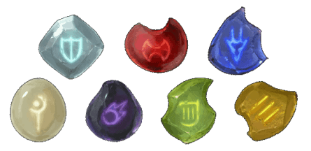

- Доспех (кожаный доспех), очень редкий (требуется настройка)
- Рекомендованная стоимость: 5 001-50 000 зм
Ряд экспериментов Квалиша был попытками исследовать работы легендарного мага Хеварда, который первым создал то, что он назвал доспех наемника. Пока вы носите эту броню, вы получаете бонус +1 к КД. Кроме того, автоматические ремни доспеха могут помочь с извлечением и укладкой оружия в ножны, так что вы можете вытащить или убрать два одноручных оружия, когда обычно вы можете вытащить или убрать только одно.
Этот доспех также имеет шесть карманов, каждый из которых представляет собой демиплан. Каждый карман может вместить до 20 фунтов материала, не превышая объема 2 кубических фута. Доспех всегда весит 10 фунтов, независимо от содержимого карманов. Помещение объекта в один из карманов брони соответствует обычным правилам взаимодействия с объектами. Чтобы достать предмет из кармана доспеха, вам необходимо использовать действие. Когда вы достаете из кармана за определенную вещь, она всегда волшебным образом оказывается наверху.
Размещение доспехов внутри демиплана, созданного сумкой хранения [bag of holding], удобным рюкзак Хеварда [heward’s handy haversack] или подобным предметом, мгновенно уничтожает оба предмета и открывает врата в Астральный план. Врата возникают там, где один предмет был помещен внутрь другого. Любое существо в пределах 10 футов от врат засасывается через них и попадает в случайное место на Астральном плане. Затем врата закрываются. Врата односторонние и не могут быть открыты вновь.
Магические предметы
Камень Йоун [Ioun stone]DMG14 IMR AL00-06 DMG24

- Чудесный предмет, редкость варьируется (редкий, очень редкий, легендарный, требуется настройка)
Камень Йоун назван в честь богини знаний и пророчеств, почитаемой в нескольких мирах. Существует много разновидностей камней Йоун, все они отличаются по форме и цвету.
Если вы действием подбрасываете один из этих камней в воздух, он начинает вращаться вокруг вашей головы на расстоянии 1к3 футов, предоставляя вам постоянное преимущество. Впоследствии другое существо может действием схватить руками или чем-то иным камень, забирая его себе, если совершит успешный бросок атаки по КД 24 или совершит успешную проверку Ловкости (Акробатика) Сл 24. Вы сами можете действием схватить и убрать камень, оканчивая его эффект.
У камня КД 24, 10 хитов и сопротивление ко всем видам урона. Пока он вращается вокруг вашей головы, он считается носимым.
Сортировка:Большое поглощение (легендарный). Пока этот эллипсоид с зелёными и лавандовыми прожилками вращается вокруг вашей головы, вы можете реакцией отменить заклинание с уровнем не больше 8, наложенное видимым вами существом и нацеленное только на вас.
Если вы становитесь целью заклинания, чей уровень настолько большой, что камень не может поглотить его целиком, это заклинание нельзя отменить. Как только камень отменит 50 уровней заклинаний, он выгорит и станет тускло-серым, потеряв всю магию.
Восприятие (редкий). Пока этот тёмно-синий ромбоид вращается вокруг вашей головы, вы не можете быть захвачены врасплох.
Защита (редкий). Пока эта серо-розовая призма вращается вокруг вашей головы, вы получаете бонус +1 к КД.
Лидерство (очень редкий). Пока эта сфера с розовыми и зелёными прожилками вращается вокруг вашей головы, ваше значение Харизмы увеличивается на 2, с максимумом 20.
Мастерство (легендарный). Пока эта бледно-зелёная призма вращается вокруг вашей головы, ваш бонус мастерства увеличивается на 1.
Питание (редкий). Пока этот прозрачный веретенообразный камень вращается вокруг вашей головы, вам не нужно ни есть, ни пить.
Поглощение (очень редкий). Пока этот бледно-лавандовый эллипсоид вращается вокруг вашей головы, вы можете реакцией отменить заклинание с уровнем не больше 4-го, наложенное видимым вами существом и нацеленное только на вас.
Если вы становитесь целью заклинания, чей уровень настолько большой, что камень не может поглотить его целиком, это заклинание нельзя отменить. Как только камень отменит 20 уровней заклинаний, он выгорит и станет тускло-серым, потеряв всю магию.
Проворство (очень редкий). Пока эта тёмно-красная сфера вращается вокруг вашей головы, ваше значение Ловкости увеличивается на 2, с максимумом 20.
Проницательность (очень редкий). Пока эта ярко-синяя сфера вращается вокруг вашей головы, ваше значение Мудрости увеличивается на 2, с максимумом 20.
Рассудок (очень редкий). Пока эта сфера с алыми и синими прожилками вращается вокруг вашей головы, ваше значение Интеллекта увеличивается на 2, с максимумом 20.
Регенерация (легендарный). Вы восстанавливаете 15 хитов в конце каждого часа, в течение которого этот жемчужно-белый веретенообразный камень вращается вокруг вашей головы, при условии, что у вас есть как минимум 1 хит.
Резерв (редкий). Эта ярко-фиолетовая призма хранит заклинания, наложенные в неё, пока вы не используете их. Этот камень может хранить до 3-х уровней заклинаний одновременно. Когда его находят, он хранит 1к4 - 1 уровень заклинаний, выбранных Мастером.
Любое существо может заложить в камень заклинание с уровнем от 1-го до 3-го, касаясь его при накладывании. Заклинание не вступает в силу, а просто помещается в камень. Если камень не может уместить заклинание, заклинание тратится безо всякого эффекта. Занимаемое число уровней определяется уровнем, с которым заклинание было наложено.
Пока этот камень вращается вокруг вашей головы, вы можете наложить заклинание, хранящееся в нём. Заклинание использует уровень ячейки, Сл спасброска, бонус атаки заклинанием и базовую характеристику исходного заклинателя, но во всём остальном считается, что заклинание наложили вы. Наложенное заклинание перестаёт храниться в камне, освобождая пространство.
Сила (очень редкий). Пока этот бледно синий ромбоид вращается вокруг вашей головы, ваше значение Силы увеличивается на 2, с максимумом 20.
Стойкость (очень редкий). Пока этот розовый ромбоид вращается вокруг вашей головы, ваше значение Телосложения увеличивается на 2, с максимумом 20.
Живучесть (очень редкий) [IMR]. Пока эта сине-зелёная мраморная сфера вращается вокруг вашей головы, вы получаете бонус +1 к спасброскам от смерти.
Высший интеллект (редкий) [LLK]. Пока эта гранёная сфера вращается вокруг вашей головы, вы получаете бонус +1 к проверкам Интеллекта.
Знание истории (редкий) [LLK]. Пока эта стальная полированная сфера вращается вокруг вашей головы, вы получаете владение навыком История или бонус +1 к проверкам этого навыка, если уже владеете им.
Знание природы (редкий) [LLK]. Пока этот блестящий латунный камень вращается вокруг вашей головы, вы получаете владение навыком Природа или бонус +1 к проверкам этого навыка, если уже владеете им.
Знание религии (редкий) [LLK]. Пока этот крохотный золотистый самоцвет вращается вокруг вашей головы, вы получаете владение навыком Религия или бонус +1 к проверкам этого навыка, если уже владеете им.
Знание языков (редкий) [LLK]. Пока этот пульсирующий осколок красного драгоценного кристалла вращается вокруг вашей головы, вы владеете одним дополнительным языком. Мастер выбирает несомый камнем язык.
Самосохранение (редкий) [LLK]. Пока этот серебристый самоцвет вращается вокруг вашей головы, вы получаете бонус +1 к спасброскам Интеллекта.
- Оружие (любой меч), редкое (требуется настройка)
- Рекомендованная стоимость: 501-5 000 зм
Выберите магический бонус от +1 до +3. Этот меч получает данный бонус к броскам атаки и урона. За каждое очко бонуса, которое вы выбираете для меча, вы получаете соответствующий штраф (от -1 до -3) к вашим спасброскам от смерти. Вы можете менять этот магический бонус каждый день на рассвете.
Проклятие. Это оружие проклято, и настройка на него распространяет проклятие на вас. Пока проклятие не будет снято заклинанием снятие проклятия [remove curse] или подобной магией, вы не желаете расставаться с этим оружием.
- Оружие (любой меч), очень редкое (требуется настройка)
- Рекомендованная стоимость: 5 001-50 000 зм
Когда вы атакуете существо этим магическим оружием и выбрасываете "20" на к20 при броске атаки, существо должно совершить спасбросок Телосложения Сл 15 в дополнение к обычным эффектам атаки. При провале существо становится опутанным и должно совершать еще один спасбросок Телосложения в конце каждого своего хода. Если атакуемое существо трижды преуспевает в спасброске от этого эффекта, эффект заканчивается. Если существо трижды проваливает спасбросок, то превращается в камень и становится окаменевшим на 1 час.
Существо невосприимчиво к этому эффекту, если оно невосприимчиво к повреждениям типа оружия, не имеет тела из плоти или обладает легендарными действиями.
Проклятие. Это оружие проклято, и настройка на него распространяет проклятие на вас. Пока проклятие не будет снято заклинанием снятие проклятия [remove curse] или подобной магией, вы не желаете расставаться с оружием. Всякий раз, когда вы атакуете существо этим оружием и выбрасываете "1" на к20 при броске атаки, вы должны преуспеть в спасброске Телосложения Сл 15, иначе вы будете опутаны магией клинка и придётся совершать дополнительные спасброски против окаменения, как указано выше.
- Оружие (любой меч), очень редкое (требуется настройка)
- Рекомендованная стоимость: 5 001-50 000 зм
Когда вы атакуете существо этим магическим оружием и выбрасываете "20" на к20 при броске атаки, существо должно совершить спасбросок Мудрости Сл 15 в дополнение к обычным эффектам атаки. При провале существо также подвергается эффекту заклинания превращение [polymorph].
Бросьте к20 и обратитесь к следующей таблице, чтобы определить форму, в которую трансформируется существо.
Существо невосприимчиво к этому эффекту, если оно обладает иммунитетом урону типа оружия, является перевёртышем или обладает легендарными действиями.
Проклятие. Это оружие проклято, и настройка на него распространяет проклятие на вас. Пока проклятие не будет снято заклинанием снятие проклятия [remove curse] или подобной магией, вы не желаете расставаться с оружием. Всякий раз, когда вы атакуете существо этим оружием и выбрасываете "1" при броске атаки, вы подвергаетесь эффекту заклинания превращение [polymorph] в течение 1 часа, совершая бросок по таблице выше, чтобы определить вашу новую форму.
- Доспех (кожаный доспех), редкий (требуется настройка)
- Рекомендованная стоимость: 501-5 000 зм
Странные ритуалы превратили тело голема из плоти в этот частично разумный костюм из кожаных доспехов.
Пока вы носите этот доспех, вы получаете бонус +1 к КД и спасброскам от заклинаний и других магических эффектов. Кроме того, вы получаете следующие преимущества:
- Неизменяемая форма. Вы невосприимчивы к любому заклинанию или эффекту, которые могут изменить вашу форму.
- Поглощение электричества. Вы получаете сопротивление урону электричеством. Всякий раз, когда вы получаете урон электричеством, вы получаете 5 временных хитов.
Проклятие. Этот доспех проклят и настройка на него распространяет проклятие на вас. Пока проклятие не будет снято заклинанием снятие проклятия [remove curse] или подобной магией, вы не желаете расставаться с доспехами. Кроме того, пока вы носите проклятую броню, вы получаете следующие свойства:
- Отвращение к огню. Если вы получаете урон огнём, вы совершаете с помехой броски атаки и проверки характеристик до конца вашего следующего хода.
- Берсерк. Всякий раз, когда по вам наносится критическое попадание, бросьте к6. При "6" броня заставляет вас сойти с ума. В каждый свой ход в состоянии берсерка вы атакуете ближайшее существо, которое видите. Если поблизости нет существ, к которым можно было бы подойти и атаковать, вы атакуете объект, отдавая предпочтение объекту меньшего размера, чем вы сами. Как только доспех заставляет вас сойти с ума, его нельзя снять. Вы продолжаете атаковать до тех пор, пока не станете недееспособным или пока другое существо не сможет успокоить вас соответствующей магией (например, заклинанием умиротворение [calm emotions]) или успешной проверкой Харизмы (Убеждение) Сл 15.
- Чудесный предмет, легендарный
- Рекомендованная стоимость: от 50 001 зм
Эта колода хранящаяся в кожаном мешочке, содержит двадцать две цветные карты, сделанные из какого-то прочного, но неизвестного металла, каждая из которых имеет рисунок, напечатанный в виде мозаики из выпуклых точек.
Перед тем, как тянуть карты, вы должны объявить, сколько собираетесь брать, а затем тяните их по одной (можете использовать модифицированную колоду обычных игральных карт). Карты, взятые сверх названного числа, не будут иметь эффекта. Как только вы вытянули карту, её магия начинает действовать. Вы должны тянуть следующую карту не позднее, чем через час после предыдущей. Если вы не вытянули названное число карт, оставшиеся сами вылетают из колоды и вступают в силу одновременно. Как только карта вытягивается, она исчезает. Если это не Дурак, и не Шут, карта вновь появляется в колоде, что позволяет вытянуть её повторно.
Игральная карта Карта Туз бубен Визирь Король бубен Солнце Дама бубен Луна Валет бубен Звезда Двойка бубен Комета Туз червей Судьба Король червей Трон Дама червей Ключ Валет червей Рыцарь Двойка червей Драгоценность Туз треф Когти Король треф Пустота Дама треф Огонь Валет треф Череп Двойка треф Юродивый Туз пик Тюрьма Король пик Руины Дама пик Эвриала Валет пик Плут Двойка пик Равновесие Джокер (со знаком) Дурак Джокер (без знака) Шут Визирь. В любой момент в течение года, после того как вы вытянули эту карту, вы можете заняться медитацией и задать вопрос, чтобы получить мысленный правдивый ответ. Кроме простой информации ответ может помочь вам решить головоломку или другую дилемму. Другими словами, приходит не только знание, но и мудрость, позволяющая этим знанием распорядиться.
Драгоценность. У ваших ног появляется клад в 1000 зм лепреконов из таблицы «Встречи в дикой местности». Если это сокровище уже было захвачено, вы получаете эквивалентное сокровище.
Дурак. На время приключения вы теряете владение одним навыком или получаете помеху на все проверки, совершаемые с помощью одного навыка (навык и штраф, определяется Мастером). Сбросьте эту карту и снова возьмите из колоды, считая оба взятия одним из объявленных вами взятий.
Звезда. Увеличьте одну из ваших характеристик на 1 на время приключения. Новое значение может превысить 20, но не должно превышать 24.
Ключ. В ваших руках появляется обычное или необычное магическое оружие, которым вы владеете, или свиток заклинаний с заклинанием того уровня, который вы можете накладывать. Мастер выбирает оружие или заклинание, которое вы получаете на время этого приключения.
Когти. Все магические предметы, который вы несли или носили, потеряны для вас. Эти предметы можно найти либо в сокровищнице монастыря Страдающего тела, либо в лаборатории Квалиша в Даоин Глоине, в зависимости от того, что произойдет позже в приключении.
Комета. Если вы в одиночку побеждаете следующее встретившееся вам враждебное чудовище или группу чудовищ, вы на время приключения получаете преимущество на проверки характеристик, совершаемые с использованием одного навыка по вашему выбору. В противном случае эта карта не действует.
Луна. Вам предоставляется возможность наложить любое заклинание 5-го уровня или ниже, и вы можете использовать эту способность 1к3 раза за время приключения.
Огонь. Великий мастер Монастыря Страдающего Тела становится вашим врагом. костяной дьявол [bone devil] ищет вашу погибель, смакуя ваши страдания, прежде чем попытаться убить вас. Если Великий мастер уже побежден, вы получаете неприязнь покровителя Гаррета Левистуссона — такого же могущественного дьявола.
Плут. ПМ по выбору Мастера становится враждебным по отношению к вам. Его личность вам не известна до тех пор, пока он сам или кто-либо ещё не проявит это. Любое заклинание очарования 6-го уровня или выше, наложенное на ПМ может положить конец враждебности ПМ по отношению к вам.
Пустота. Эта черная карта означает катастрофу. Ваша душа извлекается из вашего тела и удерживается внутри механизма либо в диспетчерской Монастыря Страдающего Тела, либо в лаборатории Квалиша в Даоине Глоине, в зависимости от того, что произойдет позже в приключении. Пока ваша душа находится в ловушке таким образом, ваше тело недееспособно. Гадание, контакт с другим планом или подобное заклинание 4-го уровня или выше раскрывает местонахождение механизма, удерживающего вашу душу. Вы больше не берете карты.
Равновесие. Ваше сознание претерпевает мучительные изменения, заставляя ваше мировоззрение измениться. Законное становится хаотичным, доброе становится злым, и наоборот. Если у вас истинно нейтральное мировоззрение или у вас нет мировоззрения, эта карта не оказывает никакого эффекта.
Руины. Вы теряете все богатства, которые вы носите или которыми владеете, кроме волшебных предметов. Это богатство можно вернуть либо в сокровищнице Монастыря Страдающего Тела, либо в лаборатории Квалиша в Даоин Глоине, в зависимости от того, что произойдет позже в приключении.
Рыцарь. Вы получаете услугу любого из ПМ в разделе «Наемники», не состоящего в данный момент в отряде, который появляется в выбранном вами пространстве в пределах 30 футов от вас. ПМ преданно служат вам на протяжении всего приключения, полагая, что судьба свела его с вами. Вы управляете этим персонажем.
Солнце. Вы получаете владение навыком по вашему выбору на время приключения. Кроме того, в ваших руках появляется обычный или необычный чудесный предмет. Мастер выбирает предмет, которым вы владеете на время этого приключения.
Судьба. Ткань реальности разворачивается и складывается вновь, позволяя вам избежать или стереть один случай, как будто его никогда не было. Вы можете использовать магию карты сразу, как только вытянете её, или в любое другое время во время приключения.
Трон. Вы получаете владение навыком Убеждение и удваиваете свой бонус мастерства при проверках этого навыка на протяжении всего приключения. Кроме того, мозги в банках Монастыря Страдающего Тела считают вас законным хозяином монастыря. Вы должны победить или иным образом уничтожить Великого Мастера и его слуг, прежде чем вы сможете объявить монастырь своим.
Тюрьма. Вы мгновенно телепортируетесь и становитесь заключены в тюрьму Монастыря Страдающего Тела. Все вещи, которые были у вас или на вас, остаются в том месте, где вы были до исчезновения. Вы больше не тянете карты.
Череп. Вы вызываете аватар смерти — механический скелет (используйте блок костяной наги [bone naga]), одетый в рваную черную мантию. Он появляется в пределах 10 футов от вас (в месте по выбору Мастера) и нападает на вас, предупреждая всех, что вы должны выиграть это сражение в одиночку. Образ смерти сражается до тех пор, пока вы не погибнете, или его хиты не опустятся до 0. После этого он исчезает. Если кто-нибудь попытается помочь вам, он вызовет этим собственный образ смерти. Существо, убитое образом смерти, не может быть возвращено к жизни.
Шут. Вы получаете владение навыком по вашему выбору на время приключения или можете вытянуть две карты в дополнение к заявленному ранее количеству карт.
Эвриала. Напоминающий медузу образ на карте проклинает вас. Вы получаете штраф -1 к спасброскам на время приключения.
Юродивый. Уменьшите свой Интеллект на 1к4 + 1 (но не ниже 1) на время приключения. Вы можете вытянуть дополнительно ещё одну карту сверх заявленного ранее количества.
- Чудесный предмет, редкий (требуется настройка)
- Рекомендованная стоимость: 501-5 000 зм
Эта искусно вырезанная трубка пускает пузыри без запаха вместо дыма при использовании. У трубки 3 заряда, и она восстанавливает все потраченные заряды ежедневно на рассвете. Пока вы держите трубку, вы можете расходовать заряды, чтобы получить доступ к следующим свойствам:
- Вы можете действием наложить заклинание туманное облако [fog cloud] (1 заряд).
- Вы можете бонусным действием сотворить заклинание туманный шаг [misty step] (2 заряда).
- Вы можете действием призвать парового мефита [steam mephit] (3 заряда). Мефит дружелюбен к вам, подчиняется вашим устным командам и действует в свой ход в порядке инициативы. Он исчезает в безвредном облачке пара через 1 минуту или если заканчивает свой ход на расстоянии более 60 футов от трубки.
- Доспех (латы), легендарный (требуется настройка)
- Рекомендованная стоимость: от 50 001 зм
Силовой доспех напоминает комплект из необычных лат с тонко сочлененными суставами, соединенными маслянистым черным материалом, похожим на кожу. Доспехи были созданы, чтобы создать вид мускулистого воина, а большой шлем, который присутствует в комплекте, необычен тем, что в нем нет отверстий — только широкая стеклянная пластина спереди и второй кусок стекла над ней. Странные пластины, трубки и большие металлические выступы украшают доспехи, казалось бы, случайным образом. На задней части левой рукавицы доспеха находится прямоугольная металлическая коробка, из которой торчит короткий стержень с коническим красным кристаллом на конце.
Нося этот доспех, вы получаете следующие преимущества:
- У вас есть бонус +1 к КД.
- Ваш показатель Силы равен 18 (это не оказывают на вас эффект, если ваша Сила без них равна 18 или выше).
- Вы совершаете с преимуществом спасброски от смерти.
Доспех имеет дополнительные возможности, которые могут питаться либо от энергетических ячеек, либо от вашей собственной жизненной энергии. Вы можете использовать бонусное действие, чтобы черпать энергию из энергоячейки или пожертвовать хитами, чтобы получить одно из следующих преимуществ:
- Создание силового поля, чтобы получить 2к6 + 5 временных хитов (1 заряд или 5 хитов).
- Активация ускорителей, чтобы получить скорость полета 15 футов на 1 минуту (1 заряд или 5 хитов).
- Установленный на руке лазер: Дальнобойная атака оружием: +8 к попаданию, дальность 120 футов, одна цель. Попадание: 2к6 урона излучением (1 заряд или 5 хитов).
- Перевод любых письмен, которые вы можете увидеть на любом немагическом языке, в общей сложности в одну тысячу слов за 1 минуту (1 заряд или 5 хитов).
- Наполнение брони воздухом, позволяющим нормально дышать в любых условиях до 1 часа (1 заряд или 5 хитов).
- Получение темного зрения в радиусе 60 футов на срок до 1 часа (1 заряд или 5 хитов).
Доспех может использовать только одну энергетическую ячейку за раз. Доспех можно найти с одной прикрепленной энергетической ячейкой, содержащей 2к10 зарядов.
Варианты Силового доспеха
В зависимости от того, где и как этот доспех появится в приключении, вы можете изменить характеристики легендарного Квалиша.
Автоматическая защита. Если Квалиш не отключит автоматическую защиту костюма, никто не сможет приблизиться к доспехам, не отключив эту защиту. Рассматривайте доспех как щитостража [shield guardian], с вложенным в него заклинанием волшебная стрела [magic missile] с использованием ячейки заклинания 4-го уровня. Когда хиты доспеха уменьшаются до 0, его защита становится инертной, и к нему можно безопасно приближаться.
Сражение воли. Когда новый пользователь надевает доспех, он считает себя превосходящим и пытается завладеть этим пользователем. Пользователь должен преуспеть в спасброске Харизмы Сл 13, иначе он окажется одержим доспехами. Во время одержимости пользователь становится недееспособным и теряет контроль над своим телом, но сохраняет сознание. Доспех использует характеристики одержимого пользователя (пользующегося доспехом), но не получает доступа к знаниям, умениям или навыкам пользователя.
Для освобождения существа, пойманного в доспех, сначала необходимо победить автоматическую защиту брони (как указано выше). Пойманное существо также может совершить спасбросок Харизмы Сл 20 каждый день на рассвете. В случае успеха доспехи больше не контролируют существо и могут быть безопасно надеты этим существом в любое время.
Стазис. Всякий раз, когда хиты существа в доспехе падают до 0, доспех помещает это существо в состояние стазиса. Находясь в этом состоянии, существо стабилизированно и не совершает спасброски от смерти, но доспех берет на себя управление существом (как указано выше). Кроме того, доспех пытается принять личность пользователя, уверяя своих союзников, что все в порядке. Чтобы высвободить пользователя, сначала необходимо победить автоматическую защиту доспеха (как указано выше). Существо в стазисе не совершает спасброски Харизмы, чтобы сломить контроль доспехов.
Альтернативная энергия. Первоначально для питания силового доспеха требовались энергетические ячейки, но Квалиш адаптировал его для подпитки жизненной энергией носящего его существа. Вы можете решить, что доспех также может получать энергию из дополнительных источников или что энергетические элементы можно перезаряжать с помощью ремонтника, изобретателя или ремесленника. Союзники также могут подключиться к доспехам с помощью магии, создающей канал, похожий на астральный серебряный шнур. При таком соединении союзник по доброй воле может реакцией израсходовать часть своих хитов, чтобы подпитать способности доспеха.